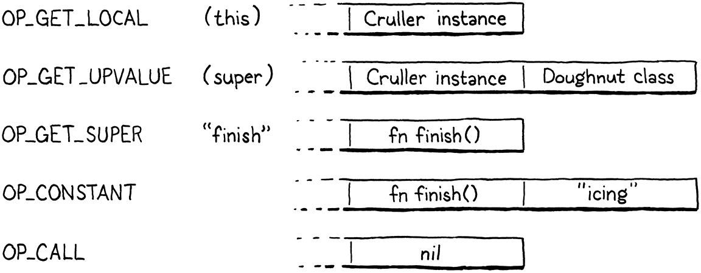

超类
你可以选择你的朋友，但你不能选择你的家人，不管你是否承认他们，他们仍然是你的亲人，如果你不承认，这会让你看起来很傻。
-- Harper Lee,To Kill a Mockingbird
这是我们向 VM 添加新功能的最后一章。我们已经将几乎整个 Lox 语言打包在那里。剩下的就是继承方法和调用超类方法。在这一章之后我们还有另一章，但它没有引入新的行为。它只会使现有的东西更快。完成这一步，您将拥有一个完整的 Lox 实现。
这个“只会使”不表示让东西变得更快不重要！毕竟，我们整个第二个虚拟机的全部目的是比 jlox 有更好的性能。你可以争辩说过去十五章都是“优化”。
本章中的一些材料会让您想起 jlox。我们解决 super 调用的方式几乎相同，虽然 clox 是通过在栈上存储状态的复杂机制来实现的。但是这次我们有一种完全不同的、更快的方法来处理继承的方法调用。
29.1 继承方法
我们将从方法继承开始，因为它更简单。复习一下，Lox 继承语法如下所示：
class Doughnut {
cook() {
print "Dunk in the fryer.";
}
}
class Cruller < Doughnut {
finish() {
print "Glaze with icing.";
}
}
在这里，Cruller 类继承自 Donut，因此 Cruller 的实例继承了该cook()方法。我不知道我为什么要强调这个。你知道继承是如何工作的。让我们开始编译新语法。
currentClass = &classCompiler;
if (match(TOKEN_LESS)) {
consume(TOKEN_IDENTIFIER, "Expect superclass name.");
variable(false);
namedVariable(className, false);
emitByte(OP_INHERIT);
}
namedVariable(className, false);
// compiler.c, in classDeclaration()
在我们编译类名之后，如果下一个标记是 <，那么找到了一个超类子句。消费掉超类的标识符token，然后调用variable()该函数采用先前使用的token，将其视为变量引用，并发出代码以加载变量的值。换句话说，它按名称查找超类并将其压入栈。
之后，我们调用namedVariable()将进行继承的子类加载到栈上，然后是一条OP_INHERIT指令。该指令将超类连接到新的子类。在上一章中，我们定义了一条OP_METHOD指令，通过向其方法表中添加一个方法来改变现有的类对象。这很相似——该OP_INHERIT指令采用现有类并将继承的效果应用于它。
在前面的示例中，当编译器通过这段语法工作时：
class Cruller < Doughnut {
结果是这个字节码：

在我们实现新OP_INHERIT指令之前，需要检测一个边缘情况。
variable(false);
if (identifiersEqual(&className, &parser.previous)) {
error("A class can't inherit from itself.");
}
namedVariable(className, false);
// compiler.c, in classDeclaration()
一个类不能是它自己的超类。除非你能接触到一个精神错乱的核物理学家和一个经过大量修改的 DeLorean，否则你无法从自己那里继承。
有趣的是，通过我们实现方法继承的方式，我认为允许循环实际上不会在 clox 中引起任何问题。它不会做任何有用的事情，但我不认为它会导致崩溃或无限循环。
29.1.1 执行继承
现在进入新指令。
OP_CLASS,
OP_INHERIT,
OP_METHOD
// chunk.h, in enum OpCode
无需担心操作数。我们需要的两个值——超类和子类——都可以在栈中找到。这意味着反编译很容易。
return constantInstruction("OP_CLASS", chunk, offset);
case OP_INHERIT:
return simpleInstruction("OP_INHERIT", offset);
case OP_METHOD:
// debug.c, in disassembleInstruction()
解释器是动作发生的地方。
break;
case OP_INHERIT: {
Value superclass = peek(1);
ObjClass* subclass = AS_CLASS(peek(0));
tableAddAll(&AS_CLASS(superclass)->methods,
&subclass->methods);
pop(); // Subclass.
break;
}
case OP_METHOD:
// vm.c, in run()
从栈的顶部向下，有子类，然后是超类。抓住这两个，然后进行继承。这就是 clox 采用与 jlox 不同的路径的地方。在我们的第一个解释器中，每个子类都存储了对其超类的引用。在方法访问上，如果没有在子类的方法表中找到该方法，将通过继承链递归查找每个祖先的方法表，直到找到为止。
例如，调用Cruller 的一个实例 cook()方法， jlox的调用路径：

在方法调用期间需要执行大量工作。它很慢，而且更糟的是，继承的方法在祖先链上越远，它就越慢。不是一个很棒的表演故事。
新方法要快得多。声明子类时，将所有继承类的方法复制到子类自己的方法表中。以后调用一个方法时，从超类继承的任何方法都可以在子类自己的方法表中找到。继承根本不需要额外的运行时工作。在类被声明时，工作已经完成。这意味着继承的方法调用与普通方法调用一样快——一次哈希表查找。

好吧，我猜是两次哈希表查找。因为首先我们必须确保实例上的字段不会隐藏该方法。
我有时听说过这种称为“向下复制继承”的技术。它既简单又快速，但与大多数优化一样，您只能在某些限制条件下使用它。它在 Lox 中有效，因为 Lox 类是封闭的。一旦类声明完成执行，该类的方法集就永远不会改变。
在 Ruby、Python 和 JavaScript 等语言中，可以破解现有类并将一些新方法插入其中，甚至删除它们。这会破坏我们的优化，因为如果在子类声明执行后这些修改发生在超类上，子类将不会接受这些更改。这打破了用户的期望，即继承总是反映超类的当前状态。
可以想象，在运行时更改类命令式定义的方法集会使程序难以推理。它是一个非常强大的工具，但也是一个危险的工具。
那些觉得这个工具可能有点太危险的人给它取了一个不恰当的名字“猴子补丁”，或者更不礼貌的“鸭子打孔”。

对我们来说幸运的是（但我猜对喜欢该功能的用户来说不是），Lox 不会让您修补猴子或打鸭子，因此我们可以安全地应用此优化。
方法覆盖呢？将超类的方法复制到子类的方法表中不会与子类自己的方法发生冲突吗？幸运的是，没有。我们在创建子类OP_CLASS的指令之后但在任何方法声明和OP_METHOD指令被编译之前发出OP_INHERIT。在我们向下复制超类的方法时，子类的方法表是空的。子类覆盖的任何方法都将覆盖表中那些继承的条目。
29.1.2 无效的超类
我们的实现简单而快速，这正是我喜欢 VM 代码的方式。但它并不健壮。没有什么可以阻止用户从根本不是类的对象继承：
var NotClass = "So not a class";
class OhNo < NotClass {}
显然，没有自尊的程序员会这样写，但必须提防那些没有自尊的潜在 Lox 用户。一个简单的运行时检查可以解决这个问题。
Value superclass = peek(1);
if (!IS_CLASS(superclass)) {
runtimeError("Superclass must be a class.");
return INTERPRET_RUNTIME_ERROR;
}
ObjClass* subclass = AS_CLASS(peek(0));
// vm.c, in run()
如果我们从超类子句中的标识符加载的值不是 ObjClass，将报告运行时错误，让用户知道我们对它们及其代码的看法。
29.2 存储超类
你有没有注意到，当我们添加方法继承时，实际上并没有添加任何从子类到它的超类的引用？在我们复制继承的方法之后，我们完全忘记了超类。我们不需要保留超类的句柄，所以我们不需要。
这不足以支持super 调用。由于子类可能会覆盖超类方法，因此我们需要能够接触到超类方法表。在我们讨论该机制之前，我想重温一下super调用是如何静态解析的。
“可能”这个词可能不够有力。据推测该方法已被覆盖。否则，你为什么要费心去使用
super而不是直接调用它呢？
回到 jlox 的太平盛世，我向您展示了这个棘手的示例来解释super调用的调度方式：
class A {
method() {
print "A method";
}
}
class B < A {
method() {
print "B method";
}
test() {
super.method();
}
}
class C < B {}
C().test();
在test()方法体内，this是 C 的一个实例。如果super调用是相对于接收者的超类解析的，那么我们将在 C 的超类 B 中查找。但是super调用是相对于周围类的超类解析的。在这种情况下，我们在 B 的test()方法中，所以超类是 A，程序应该打印“A method”。
这意味着super调用不会根据运行时实例动态解析。用于查找方法的超类是调用发生位置的静态（实际上是词法）属性。当我们向 jlox 添加继承时，我们利用了词法作用域的静态性,将超类存储在与词法作用域相同的环境中。几乎就好像解释器看到上面的程序是这样的：
class A {
method() {
print "A method";
}
}
var Bs_super = A;
class B < A {
method() {
print "B method";
}
test() {
runtimeSuperCall(Bs_super, "method");
}
}
var Cs_super = B;
class C < B {}
C().test();
每个子类都有一个隐藏变量存储对其超类的引用。每当需要执行super调用时，从该变量访问超类并告诉运行时开始在那里寻找方法。
我们将采用与 clox 相同的方法。不同之处在于，我们拥有字节码 VM 的值栈和上值系统，而不是 jlox 的堆分配环境类。机制有点不同，但整体效果是一样的。
29.2.1 一个超类的局部变量
我们的编译器已经发出代码来将超类加载到栈上。我们没有将该插槽保留为临时变量，而是创建了一个新作用域并将其设为局部变量。
}
beginScope();
addLocal(syntheticToken("super"));
defineVariable(0);
namedVariable(className, false);
emitByte(OP_INHERIT);
// compiler.c, in classDeclaration()
创建一个新的词法作用域确保如果我们在同一作用域内声明两个类，每个类都有一个不同的本地槽来存储其超类。由于我们总是将这个变量命名为“super”，如果我们不为每个子类创建一个作用域，变量就会发生冲突。
我们将变量命名为“super”的原因与使用“this”作为表达式解析为的隐藏局部变量名称的原因相同：“super”是一个保留字，它保证编译器的隐藏变量不会与用户定义冲突。
不同之处在于，在编译this表达式时，我们可以方便地使用一个词素为“this”的token。我们在这里没那么幸运。相反，我们添加了一个小辅助函数来为给定的常量字符串创建一个合成标记。
static Token syntheticToken(const char* text) {
Token token;
token.start = text;
token.length = (int)strlen(text);
return token;
}
// compiler.c, add after variable()
我说“常量字符串”是因为token不对其词素进行任何内存管理。如果我们尝试为此使用堆分配的字符串，我们最终会泄漏内存，因为它永远不会被释放。但是 C 字符串文字的内存位于可执行文件的常量数据部分，永远不需要释放，所以我们很好。
由于我们为超类变量打开了局部作用域，因此需要关闭它。
emitByte(OP_POP);
if (classCompiler.hasSuperclass) {
endScope();
}
currentClass = currentClass->enclosing;
// compiler.c, in classDeclaration()
在编译类主体及其方法后，我们弹出作用域并丢弃“super”变量。这样，该变量就可以在子类的所有方法中访问。这是一个有点毫无意义的优化，但我们只有在有超类子句时才创建范围。因此，只有在存在一个范围时，我们才需要关闭范围。
为了跟踪这一点，我们可以在classDeclaration()中定义一个局部变量。但是很快，编译器中的其他函数将需要知道周围的类是否是子类。所以我们不妨帮助未来的自己，现在将这个事实作为一个字段存储在 ClassCompiler 中。
typedef struct ClassCompiler {
struct ClassCompiler* enclosing;
bool hasSuperclass; //<<
} ClassCompiler;
// compiler.c, in struct ClassCompiler
当我们第一次初始化一个 ClassCompiler 时，假设它不是一个子类。
ClassCompiler classCompiler;
classCompiler.hasSuperclass = false;
classCompiler.enclosing = currentClass;
// compiler.c, in classDeclaration()
然后，如果看到一个超类子句，就知道正在编译一个子类
emitByte(OP_INHERIT);
classCompiler.hasSuperclass = true;
}
// compiler.c, in classDeclaration()
这种机制提供了一种在运行时从子类的任何方法中访问周围子类的超类对象的机制——只需发出代码来加载名为“super”的变量。该变量是方法主体外部的局部变量，但我们现有的上值支持使 VM 能够捕获方法主体内部的局部变量，甚至是嵌套在该方法内的函数中的局部变量。
29.3 调用超类方法
有了运行时支持，就可以实现super调用了。像往常一样，我们从前到后，从新语法开始。super 调用自然地以关键字开始。`s
就是这样，朋友。您要添加到解析表中的最后一个条目。
[TOKEN_RETURN] = {NULL, NULL, PREC_NONE},
[TOKEN_SUPER] = {super_, NULL, PREC_NONE},
[TOKEN_THIS] = {this_, NULL, PREC_NONE},
// compiler.c, replace 1 line
当表达式解析器找到一个supertoken时，控制权跳转到一个新的解析函数，它像这样开始：
static void super_(bool canAssign) {
consume(TOKEN_DOT, "Expect '.' after 'super'.");
consume(TOKEN_IDENTIFIER, "Expect superclass method name.");
uint8_t name = identifierConstant(&parser.previous);
}
// compiler.c, add after syntheticToken()
这与我们编译this表达式的方式有很大不同。与 this不同，super token不是独立的表达式。相反，点和它后面的方法名称是语法不可分割的部分。但是，括号内的参数列表是分开的。与普通方法访问一样，Lox 支持在不调用它的情况下将对超类方法的引用作为闭包获取：
假设问题：如果一个裸
supertoken是一个表达式，它会计算出什么样的对象？
class A {
method() {
print "A";
}
}
class B < A {
method() {
var closure = super.method;
closure(); // Prints "A".
}
}
换句话说，Lox 并没有真正的super调用表达式，它有super访问表达式，您可以根据需要选择立即调用。因此，当编译器命中一个supertoken时，我们会使用后续.标记，然后查找方法名称。方法是动态查找的，所以我们使用identifierConstant()方法名称token 的词位并将其存储在常量表中，就像我们对属性访问表达式所做的那样。
以下是编译器在使用这些标记后所做的事情：
uint8_t name = identifierConstant(&parser.previous);
namedVariable(syntheticToken("this"), false);
namedVariable(syntheticToken("super"), false);
emitBytes(OP_GET_SUPER, name);
}
// compiler.c, in super_()
为了访问当前实例的超类方法，运行时需要接收者和周围方法所在类的超类。第一次调用namedVariable()生成代码来查找存储在隐藏变量“this”中的当前接收器并将其压入栈。第二次调用namedVariable()发出代码以从其“super”变量中查找超类并将其push到栈顶。
最后，我们发出一条新OP_GET_SUPER指令，其中将包含方法名称的常量表索引作为操作数。在脑子里想的太多了。为了使其具体化，请考虑以下示例程序：
class Doughnut {
cook() {
print "Dunk in the fryer.";
this.finish("sprinkles");
}
finish(ingredient) {
print "Finish with " + ingredient;
}
}
class Cruller < Doughnut {
finish(ingredient) {
// No sprinkles, always icing.
super.finish("icing");
}
}
为发出 super.finish("icing") 表达式的字节码看起来和工作方式如下：

前三个指令让运行时访问执行访问super所需的三个信息：
-
第一条指令将实例加载到栈上。
-
第二条指令加载解析该方法的超类。
-
然后新
OP_GET_SUPER指令将要访问的方法的名称编码为操作数。
其余指令是用于评估参数列表和调用函数的普通字节码。
我们几乎准备好在解释器中执行新指令OP_GET_SUPER了。但在这样做之前，编译器会负责报告一些错误。
static void super_(bool canAssign) {
if (currentClass == NULL) {
error("Can't use 'super' outside of a class.");
} else if (!currentClass->hasSuperclass) {
error("Can't use 'super' in a class with no superclass.");
}
consume(TOKEN_DOT, "Expect '.' after 'super'.");
// compiler.c, in super_()
super 调用仅在方法体内（或嵌套在方法内的函数中）有意义，并且仅在具有超类的类的方法内才有意义。我们使用 currentClass的值检测这两种情况。如果是NULL或指向一个没有超类的类，将报告这些错误。
29.3.1 执行 super访问
假设用户没有在不允许的地方放置super表达式，代码就会从编译器传递到运行时。我们给自己一个新指令。
OP_SET_PROPERTY,
OP_GET_SUPER,
OP_EQUAL,
// chunk.h, in enum OpCode
我们像其他采用常量表索引操作数的操作码一样反汇编它
return constantInstruction("OP_SET_PROPERTY", chunk, offset);
case OP_GET_SUPER:
return constantInstruction("OP_GET_SUPER", chunk, offset);
case OP_EQUAL:
// debug.c, in disassembleInstruction()
您可能会预料到一些更难的事情，但解释新指令类似于执行正常的属性访问。
}
case OP_GET_SUPER: {
ObjString* name = READ_STRING();
ObjClass* superclass = AS_CLASS(pop());
if (!bindMethod(superclass, name)) {
return INTERPRET_RUNTIME_ERROR;
}
break;
}
case OP_EQUAL: {
// vm.c, in run()
与属性一样，从常量表中读取方法名称。然后我们将它传递给bindMethod()，它在给定类的方法表中查找方法并创建一个 ObjBoundMethod 以将生成的闭包捆绑到当前实例。
关键区别在于我们传递哪个类 给bindMethod()。通过正常的属性访问，我们使用 ObjInstances 自己的类，它提供了我们想要的动态调度。对于super调用，我们不使用实例的类。相反，使用包含类的静态解析超类，编译器已方便地确保它位于栈顶部等待我们。
我们弹出该超类并将其传递给bindMethod()，这会正确地跳过该超类和实例自己的类之间的任何子类中的任何重写方法。它还正确地包括从其任何超类继承的任何方法。
其余行为相同。pop 超类会将实例留在栈的顶部。bindMethod()成功时，它会弹出实例并push新的绑定方法。否则，它会报告运行时错误并返回false。在那种情况下，我们中止解释器。
与
OP_GET_PROPERTY之相比的另一个区别是我们不会首先尝试寻找遮蔽字段。字段不是继承的，所以super表达式总是解析为方法。如果 Lox 是一种基于原型的语言，它使用委托而不是继承，那么实例将继承（“委托给”）其他实例，而不是一个类从另一个类继承。在那种情况下，字段可以被继承，我们需要在这里检查它们。
29.3.2 加速super 调用
现在可以访问超类方法。由于返回的对象是随后可以调用的 ObjBoundMethod，因此我们也可以使用super调用。就像上一章一样，我们已经达到了 VM 具有完整、正确语义的地步。
但是，也像上一章一样，它很慢。同样，我们为每个super调用在堆上分配一个 ObjBoundMethod，即使大多数时候下一条指令是OP_CALL立即解包绑定方法、调用它然后丢弃它的指令。事实上，与常规方法调用相比，super调用更可能如此。至少对于方法调用，用户实际上有可能调用存储在字段中的函数。使用 super 调用，您总是在查找方法。唯一的问题是您是否立即调用它。
如果编译器在超类方法名称后看到左括号，它当然可以自己回答这个问题，所以我们将继续执行与方法调用相同的优化。取出加载超类和发出的两行代码，OP_GET_SUPER并将它们替换为：
namedVariable(syntheticToken("this"), false);
if (match(TOKEN_LEFT_PAREN)) {
uint8_t argCount = argumentList();
namedVariable(syntheticToken("super"), false);
emitBytes(OP_SUPER_INVOKE, name);
emitByte(argCount);
} else {
namedVariable(syntheticToken("super"), false);
emitBytes(OP_GET_SUPER, name);
}
}
// compiler.c, in super_(), replace 2 lines
现在，在我们发出任何东西之前，先寻找一个带括号的参数列表。如果找到一个，就编译它。然后加载超类。之后，发出一条新OP_SUPER_INVOKE指令。这个超级指令结合了 OP_GET_SUPER和OP_CALL 的行为，所以它需要两个操作数：要查找的方法名称的常量表索引和要传递给它的参数的数量。
这是一个特别super的super指令，如果你明白我的意思的话。我...我为这个可怕的笑话感到抱歉。
否则，如果我们没有找到 (，将继续像以前一样将表达式编译为super访问并发出一个OP_GET_SUPER.
沿着编译流水线漂流，我们的第一站是添加一条新指令。
OP_INVOKE,
OP_SUPER_INVOKE,
OP_CLOSURE,
// chunk.h, in enum OpCode
随后添加它的反汇编程序支持。
return invokeInstruction("OP_INVOKE", chunk, offset);
case OP_SUPER_INVOKE:
return invokeInstruction("OP_SUPER_INVOKE", chunk, offset);
case OP_CLOSURE: {
// debug.c, in disassembleInstruction()
super调用指令与 OP_INVOKE具有相同的操作数集，因此重用相同的辅组函数来反汇编它。最后，管道将我们转储到解释器中。
break;
}
case OP_SUPER_INVOKE: {
ObjString* method = READ_STRING();
int argCount = READ_BYTE();
ObjClass* superclass = AS_CLASS(pop());
if (!invokeFromClass(superclass, method, argCount)) {
return INTERPRET_RUNTIME_ERROR;
}
frame = &vm.frames[vm.frameCount - 1];
break;
}
case OP_CLOSURE: {
// vm.c, in run()
这一段代码基本上是实现OP_INVOKE加上少许OP_GET_SUPER不过，栈的组织方式存在一些差异。对于未优化的super调用，在执行调用的参数之前，超类被弹出并替换为已解析函数的 ObjBoundMethod 。这确保在OP_CALL执行时，绑定方法位于参数列表下，运行时期望它用于闭包调用。
通过我们优化的指令，事情变得有点混乱：

现在解析超类方法是调用的一部分，所以参数需要在我们查找方法时已经在堆栈上。这意味着超类对象位于参数之上。
除此之外，行为与 OP_GET_SUPER后跟着OP_CALL大致相同。首先，我们提取方法名称和参数计数操作数。然后将超类从栈顶弹出，以便可以在它的方法表中查找该方法。这方便地使栈设置恰好适合方法调用。
我们将超类、方法名称和参数计数传递给现有invokeFromClass()函数。该函数在给定的类上查找给定的方法，并尝试使用给定的数量创建对它的调用。如果找不到方法，它会返回false，会退出解释器。否则，invokeFromClass() 将为方法的闭包(?method’s closure) push一个新的 CallFrame到调用栈上。这会使解释器缓存的 CallFrame 指针无效，因此我们刷新了frame。
29.4 一个完整的虚拟机
回顾一下我们创建的内容。据我统计，我们编写了大约 2,500 行相当干净、直接的 C 代码。那个小程序包含了一个完整的实现——非常高级！—Lox 语言，有一个充满表达式类型的完整优先级表和一套控制流语句。我们实现了变量、函数、闭包、类、字段、方法和继承。
更令人印象深刻的是，我们的实现可移植到任何带有 C 编译器的平台，并且速度足以满足实际生产使用。我们有一个单程字节码编译器，一个用于我们内部指令集的紧密虚拟机解释器，紧凑的对象表示，一个用于存储变量而无需堆分配的栈，以及一个精确的垃圾收集器。
如果您出去并开始研究 Lua、Python 或 Ruby 的实现，您会惊讶地发现 现在对您来说其中有很多已经很熟悉。您已经认真地提高了对编程语言工作原理的了解，这反过来又使您对编程本身有了更深入的了解。这就像你曾经是一名赛车手，现在你也可以打开引擎盖修理引擎了。
如果你愿意，你可以在这里停下来。您拥有的 Lox 的两个实现是完整且功能齐全的。你造了这辆车，现在可以把它开到任何你想去的地方。但是，如果您希望进行更有趣的调整和调整以在赛道上获得更好的性能，那么还有一章。我们没有添加任何新功能，但我们推出了一些经典优化以挤出更多性能。如果这听起来很有趣，请继续阅读...
挑战
- 面向对象编程的一个原则是类应该确保新对象处于有效状态。在 Lox 中，这意味着定义一个初始化器来填充实例的字段。继承使不变量变得复杂，因为根据对象继承链中的所有类，实例必须处于有效状态。
简单的部分是记住在每个子类的init()方法中调用super.init()。更难的部分是字段。没有什么可以阻止继承链中的两个类意外声明相同的字段名称。发生这种情况时，它们会踩到彼此的字段，并可能使您的实例处于损坏状态。
如果 Lox 是您的语言，您将如何解决这个问题（如果有的话）？如果您要更改语言，请实现您的更改。
- 我们的向下复制继承优化之所以有效，只是因为 Lox 不允许您在声明后修改类的方法。这意味着我们不必担心子类中复制的方法与以后对超类的更改不同步。
其他语言，如 Ruby，确实允许在事后修改类。此类语言的实现如何在保持方法解析高效的同时支持类修改？
- 在关于继承的 jlox 章节中，我们面临着实现 BETA 语言的方法覆盖方法的挑战。再次解决挑战，但这次是在 clox 中。这是对先前挑战的描述：
在 Lox 中，与在大多数其他面向对象语言中一样，在查找方法时，我们从类层次结构的底部开始，然后逐步向上——子类的方法优于超类的方法。为了从覆盖方法中获取超类方法，您可以使用super.
语言BETA采用相反的方法。当你调用一个方法时，它从类层次结构的*顶部开始并向下工作。超类方法胜过子类方法。为了到达子类方法，超类方法可以调用inner，这有点像 的逆运算super。它链接到层次结构中的下一个方法。
超类方法控制何时何地允许子类改进其行为。如果超类方法根本不调用inner，那么子类就没有办法覆盖或修改超类的行为。
去掉 Lox 当前的 override 和super机制，换成 BETA 的语义。简而言之：
-
调用类的方法时，类继承链上最高的方法优先。
-
在方法体内，对
inner的调用在最近的子类中查找具有相同名称的方法 沿着包含 和inner的类和this的类之间的继承链。如果没有匹配的方法，则inner调用不执行任何操作。
例如：
```js class Doughnut { cook() { print "Fry until golden brown."; inner(); print "Place in a nice box."; } }
class BostonCream < Doughnut { cook() { print "Pipe full of custard and coat with chocolate."; } }
BostonCream().cook(); ```
这应该打印：
Fry until golden brown.
Pipe full of custard and coat with chocolate.
Place in a nice box.
由于 clox 不仅要实现 Lox，而且要以良好的性能实现，所以这一次尝试着眼于效率来解决挑战。